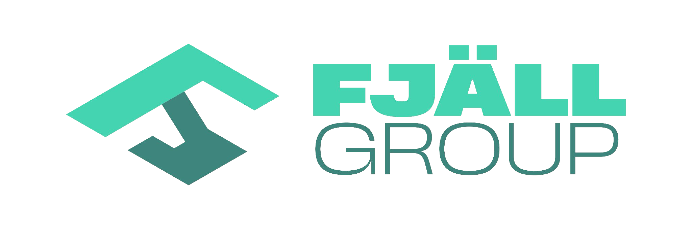
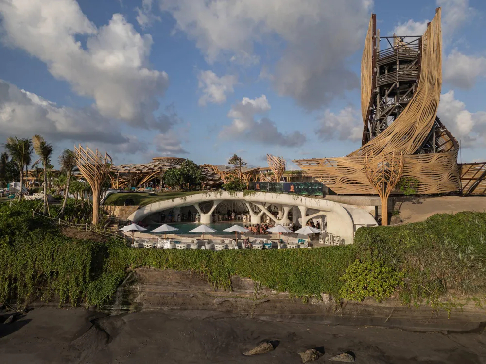

Architecture & concept
Explore the site, spatial needs and architectural direction. Develop a considered concept around the people who will use it.

Fjäll Group / Design & development
GreenShift
Architecture, project management and capital coordination, connected from the first idea to turnkey delivery.
Start a conversation01 / Our focus
GreenShift is the design and development arm of Fjäll Group. We bring your ambition, the needs of the site and the realities of construction into one coordinated brief. Architecture and building systems develop together, with delivery considered from the start.
Explore the site, spatial needs and architectural direction. Develop a considered concept around the people who will use it.
Connect design decisions, engineering interfaces and project management so the building is considered as a whole.
Bring programme, project scope and capital coordination into the conversation early. Define the next steps around the specific brief.
02 / A connected approach
Start with people, place and purpose. Share your site, priorities and first questions.
Explore the architectural direction and coordinate the structure, envelope and material systems.
Resolve interfaces, approvals, programme and delivery scope with the project team.
Connect the agreed design with preparation, construction and project-specific delivery planning.
Scope, specifications, approvals and programme are confirmed for each project.

03 / From the Fjäll portfolio
Explore Fjäll’s building-system contribution to complex architectural geometries in Bali.
Explore the project View the full Fjäll portfolioYour next project
A place, an ambition or a first question is enough to start a conversation.
Discuss your design brief